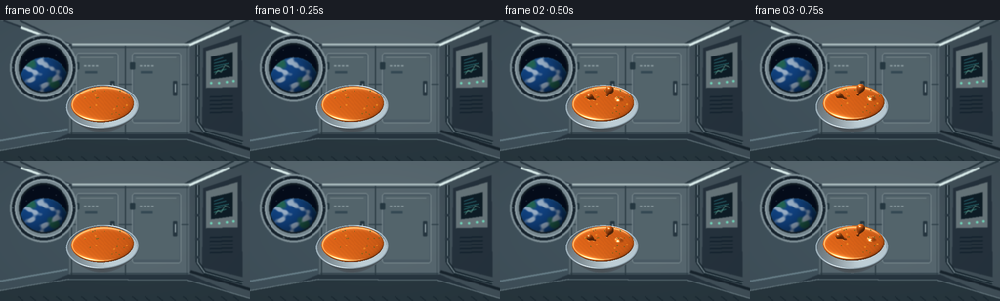
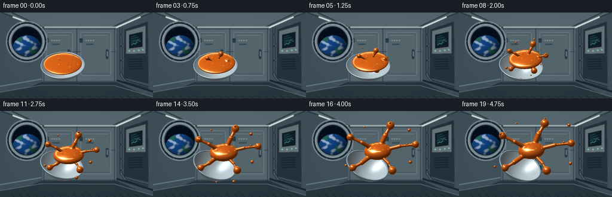
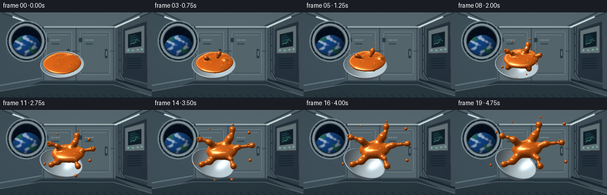

CODING AGENTS AS PIXEL WORLD MODELS
traex/GPT-6.1-Sol · mechanics_0000
点击播放 · 原生 RGB 像素
逐轮保存的候选
回放视频、检查图与代码变化。
每份候选均可单独播放。实际图片检查记录在下方工具轨迹中。
候选 01播放与检查图
点击播放 · 原生 RGB 像素


展开代码变化
--- 上一保存版本
+++ 本次保存版本
@@ -0,0 +1,336 @@
+from pathlib import Path
+import json, math
+import numpy as np
+from PIL import Image, ImageDraw, ImageFilter
+import artifact_io
+
+ROOT=Path(__file__).resolve().parent
+SPEC=json.loads((ROOT/'task_spec.json').read_text())
+W,H=SPEC['width'],SPEC['height']
+S=2
+RW,RH=W*S,H*S
+rng=np.random.default_rng(43)
+
+def unit(v):
+ v=np.asarray(v,float)
+ return v/np.maximum(np.linalg.norm(v,axis=-1,keepdims=True),1e-10)
+
+L=unit(np.array([-0.42,0.73,0.54]))
+# Coordinates are in output pixels, y up, z toward the camera.
+def background():
+ yy,xx=np.mgrid[0:RH,0:RW]/S
+ glow=np.exp(-((xx-115)**2/10000+(yy-52)**2/7000))
+ a=np.zeros((RH,RW,3),np.uint8)
+ for k,(base,g) in enumerate([(31,47),(43,49),(53,53)]):
+ a[:,:,k]=np.clip(base+g*glow+2*np.sin(xx*.023+yy*.032),0,255)
+ im=Image.fromarray(a); d=ImageDraw.Draw(im)
+ def poly(p,c): d.polygon([(int(x*S),int(y*S)) for x,y in p],fill=c)
+ def line(p,c,w=1): d.line([(int(x*S),int(y*S)) for x,y in p],fill=c,width=max(1,int(w*S)))
+ def rect(box,c,outline=None,w=1): d.rectangle(tuple(int(v*S) for v in box),fill=c,outline=outline,width=max(1,int(w*S)))
+ def rounded(box,c,r=3,outline=None,w=1): d.rounded_rectangle(tuple(int(v*S) for v in box),radius=int(r*S),fill=c,outline=outline,width=max(1,int(w*S)))
+ # Perspective structural bulkheads, panel seams and cool practical lights.
+ poly([(0,0),(256,0),(194,25),(71,25)],(88,104,112))
+ poly([(0,0),(71,25),(71,116),(0,144)],(64,81,91))
+ poly([(194,25),(256,0),(256,144),(194,116)],(65,80,89))
+ poly([(0,144),(71,116),(194,116),(256,144)],(39,53,63))
+ rect((71,25,194,116),(87,103,111))
+ for x in [73,128,191]: line([(x,26),(x,116)],(36,51,59),1)
+ for y in [27,65,115]: line([(72,y),(193,y)],(44,61,70),1)
+ for x in [3,20,239,254]:
+ if x<100: line([(x,0),(72+(x/70)*5,25)],(41,55,66),2)
+ else: line([(x,0),(182+(x-230)*.5,25)],(40,56,65),2)
+ line([(74,24),(194,24)],(170,187,190),2)
+ line([(21,7),(70,25)],(226,245,243),2.5)
+ line([(235,7),(194,25)],(221,240,239),2.5)
+ line([(0,123),(69,111)],(110,134,144),2)
+ line([(195,113),(256,132)],(24,36,45),3)
+ # Recessed central lockers with hinges, latches and small stenciled marks.
+ for x1,x2 in [(78,121),(135,185)]:
+ rounded((x1,33,x2,105),(75,91,101),3,(119,136,141),1)
+ rect((x1+2,36,x2-2,101),(84,101,108))
+ line([(x1+4,38),(x2-5,38)],(138,153,157),.6)
+ for y in [43,91]:
+ rounded((x1-2,y,x1+3,y+7),(39,57,66),1)
+ rounded((x2-8,62,x2-4,77),(38,54,64),1)
+ line([(x2-6,65),(x2-6,73)],(173,187,192),1)
+ for j in range(4): rect((x1+8+j*4,46,x1+10+j*4,47),(142,158,162))
+ rect((x1+9,52,x1+21,54),(53,73,84))
+ # Right-hand service console.
+ poly([(208,28),(247,15),(248,119),(207,109)],(37,50,61))
+ poly([(211,31),(243,22),(243,68),(211,69)],(103,117,122))
+ poly([(216,37),(238,32),(238,57),(216,60)],(14,29,38))
+ for j in range(5):
+ line([(219,41+j*3),(228+(j%3)*3,38+j*3)],(60,148+j*8,166),.65)
+ line([(220,55),(223,51),(226,53),(230,46),(235,48)],(147,213,192),.6)
+ for x,y in [(216,64),(224,64),(232,63),(239,62)]:
+ d.ellipse(((x-1)*S,(y-1)*S,(x+1)*S,(y+1)*S),fill=(114,216,188))
+ for j in range(5):
+ poly([(215,78+j*4),(238,77+j*4),(238,78+j*4),(215,79+j*4)],(16,31,43))
+ # Piping and wire loops.
+ line([(202,25),(202,104),(209,114),(248,125)],(23,38,47),4)
+ line([(202,25),(202,104),(209,114),(248,125)],(127,144,151),1.2)
+ for y in [35,55,79,98]: rect((200,y,204,y+2),(40,55,65))
+ # Left porthole housing.
+ d.ellipse((10*S,14*S,79*S,83*S),fill=(23,36,46),outline=(130,147,154),width=2*S)
+ d.ellipse((15*S,19*S,74*S,78*S),fill=(122,139,147),outline=(175,192,197),width=S)
+ d.ellipse((19*S,23*S,70*S,74*S),fill=(5,12,26),outline=(17,28,36),width=2*S)
+ # Procedurally shaded Earth through the window, clipped to the circular glass.
+ arr=np.array(im).astype(float)
+ x=(xx-45); y=yy-63
+ rad=25
+ inside=(x*x+y*y<rad*rad)&((xx-44.5)**2+(yy-48.5)**2<24.2**2)
+ nz=np.sqrt(np.clip(1-(x*x+y*y)/rad**2,0,1))
+ earthshade=np.clip(.27+.7*(-x/rad*.36-y/rad*.58+nz*.65),.12,1)
+ swirls=np.sin(x*.27+np.sin(y*.23)*2.4)+.5*np.sin(y*.58-x*.21)+.25*np.sin(x*.82+y*.37)
+ cloud=np.clip((swirls-.2)*1.2,0,.9)
+ land=np.clip((np.sin(x*.15+y*.13)+np.sin(x*.18-y*.21)-.75)*1.2,0,1)*(1-cloud)
+ cols=np.stack([20+land*18+cloud*167,75+land*33+cloud*133,146-land*58+cloud*84],axis=-1)*earthshade[:,:,None]
+ rim=(1-nz)**5
+ cols+=rim[:,:,None]*np.array([23,62,78])
+ arr[inside]=cols[inside]
+ # Stars on the black portion of the window.
+ for sx,sy in [(34,30),(50,28),(57,35),(27,41),(63,45),(44,38)]:
+ if (sx-45)**2+(sy-63)**2>rad**2:
+ arr[int(sy*S):int(sy*S)+1,int(sx*S):int(sx*S)+1]=[181,205,224]
+ im=Image.fromarray(np.uint8(np.clip(arr,0,255)));d=ImageDraw.Draw(im)
+ for ang in np.linspace(0,2*np.pi,10,endpoint=False):
+ sx=44.5+31.5*np.cos(ang);sy=48.5+31.5*np.sin(ang)
+ d.ellipse(((sx-.8)*S,(sy-.8)*S,(sx+.8)*S,(sy+.8)*S),fill=(38,54,65))
+ d.line(((sx-.45)*S,(sy-.2)*S,(sx+.45)*S,(sy+.2)*S),fill=(152,168,177),width=1)
+ # lower station shelf, emphasizes the bowl floating above it rather than sitting.
+ d.polygon([(0,133*S),(70*S,121*S),(192*S,122*S),(256*S,141*S),(256*S,144*S),(0,144*S)],fill=(40,55,63))
+ d.line([(0,133*S),(70*S,121*S),(192*S,122*S),(256*S,141*S)],fill=(137,157,164),width=2)
+ for x in range(18,250,13):
+ d.line([(x*S,139*S),((x+5)*S,143*S)],fill=(23,38,47),width=2)
+ return np.asarray(im.filter(ImageFilter.GaussianBlur(.5*S))).astype(float)
+
+BACK=background()
+
+# A compact analytic triangle rasterizer, no external rendering engine.
+def raster_mesh(img, depth, vertices, normals, faces, color, metallic=False):
+ vv=vertices.copy(); p=np.stack([vv[:,0]*S,(H-vv[:,1])*S],axis=1)
+ base=np.array(color)
+ nd=np.maximum(normals@L,0)
+ half=unit(L+np.array([0,0,1]))
+ spec=np.maximum(normals@half,0)**(65 if metallic else 42)
+ fres=(1-np.clip(normals[:,2],0,1))**4
+ colors=base[None,:]*(.35+.63*nd[:,None]) +spec[:,None]*(160 if metallic else 95)+fres[:,None]*np.array([13,23,30])
+ colors+=np.maximum(normals[:,0],0)[:,None]*np.array([5,7,9])
+ for f in faces:
+ pts=p[f];zz=vv[f,2]
+ minx=max(0,int(np.floor(pts[:,0].min())));maxx=min(RW-1,int(np.ceil(pts[:,0].max())))
+ miny=max(0,int(np.floor(pts[:,1].min())));maxy=min(RH-1,int(np.ceil(pts[:,1].max())))
+ if minx>maxx or miny>maxy:continue
+ x0,y0=pts[0]; x1,y1=pts[1]; x2,y2=pts[2]
+ den=(y1-y2)*(x0-x2)+(x2-x1)*(y0-y2)
+ if abs(den)<1e-6:continue
+ yy,xx=np.mgrid[miny:maxy+1,minx:maxx+1];xx=xx+.5;yy=yy+.5
+ w0=((y1-y2)*(xx-x2)+(x2-x1)*(yy-y2))/den
+ w1=((y2-y0)*(xx-x2)+(x0-x2)*(yy-y2))/den;w2=1-w0-w1
+ dz=w0*zz[0]+w1*zz[1]+w2*zz[2]
+ mask=(w0>=-1e-5)&(w1>=-1e-5)&(w2>=-1e-5)&(dz>depth[miny:maxy+1,minx:maxx+1])
+ if not mask.any():continue
+ shade=w0[:,:,None]*colors[f[0]]+w1[:,:,None]*colors[f[1]]+w2[:,:,None]*colors[f[2]]
+ patch=img[miny:maxy+1,minx:maxx+1];patch[mask]=shade[mask]
+ depth[miny:maxy+1,minx:maxx+1][mask]=dz[mask]
+
+
+def bowl_basis(t):
+ theta=-.04+.50*(t*t*(3-2*t))
+ # Roll a bowl whose opening points up and somewhat toward the camera.
+ bz=np.array([0.,-.60,.80]); by=np.array([0.,.80,.60]); bx=np.array([1.,0.,0.])
+ c,s=np.cos(theta),np.sin(theta)
+ rz=np.array([[c,s,0],[-s,c,0],[0,0,1]])
+ return np.stack([rz@bx,rz@by,rz@bz],axis=1)
+
+
+def render_bowl(img,depth,t):
+ mat=bowl_basis(t)
+ center=np.array([105-3*t,H-(89+3*t),0.])
+ nr,na=22,112
+ for inner in [False,True]:
+ verts=[];norm=[]
+ for j in range(nr+1):
+ r=.12+(35.2 if inner else 37.0)*j/nr
+ y=(-20.9+20.9*(r/35.32)**2) if inner else (-24.3+24.3*(r/37.12)**2)
+ slope=(41.8*r/35.32**2) if inner else (48.6*r/37.12**2)
+ for k in range(na):
+ ph=2*np.pi*k/na;cp,sp=np.cos(ph),np.sin(ph)
+ verts.append(mat@np.array([r*cp,y,r*sp])+center)
+ n=unit(np.array([-slope*cp,1,-slope*sp]) if inner else np.array([slope*cp,-1,slope*sp]))
+ norm.append(mat@n)
+ faces=[]
+ for j in range(nr):
+ for k in range(na):
+ a=j*na+k;b=j*na+(k+1)%na;c=(j+1)*na+k;e=(j+1)*na+(k+1)%na
+ faces.extend([(a,b,c),(b,e,c)])
+ raster_mesh(img,depth,np.array(verts),np.array(norm),np.array(faces), (195,211,218) if inner else (201,211,218))
+ # rolled reflective rim
+ verts=[];norm=[];nb=12
+ for k in range(na):
+ ph=2*np.pi*k/na
+ for j in range(nb):
+ a=2*np.pi*j/nb
+ r=36.25+1.02*np.cos(a)
+ verts.append(mat@np.array([r*np.cos(ph),.5+1.02*np.sin(a),r*np.sin(ph)])+center)
+ norm.append(mat@np.array([np.cos(a)*np.cos(ph),np.sin(a),np.cos(a)*np.sin(ph)]))
+ faces=[]
+ for k in range(na):
+ for j in range(nb):
+ a=k*nb+j;b=((k+1)%na)*nb+j;c=k*nb+(j+1)%nb;e=((k+1)%na)*nb+(j+1)%nb
+ faces.extend([(a,b,c),(b,e,c)])
+ raster_mesh(img,depth,np.array(verts),np.array(norm),np.array(faces),(170,190,201),True)
+ return mat,center
+
+
+def smooth_min(a,b,k):
+ h=np.maximum(k-np.abs(a-b),0)/k
+ return np.minimum(a,b)-h*h*k*.25
+
+
+def fluid_geometry(t):
+ # The bulk of the liquid retains its momentum while the bowl rotates below it.
+ lift=t*t*(3-2*t)
+ initial=np.array([105,H-86,0.])
+ c=initial+np.array([16*lift,20*lift,8*lift])
+ B=bowl_basis(0)
+ radii=np.array([32-10*lift,4.2+8*lift,30-12*lift])
+ shapes=[]
+ # Ellipsoid body plus slowly lengthening radial lobes, held together by surface tension.
+ dirs=[np.array([-.88,.45,.24]),np.array([.43,.87,-.14]),np.array([.95,.17,.06]),np.array([.48,-.63,.52]),np.array([-.69,-.46,.28])]
+ lengths=[41,36,53,36,41]
+ for i,di in enumerate(dirs):
+ di=unit(di)
+ start=c+di*(10+3*lift)
+ end=c+di*(15+lengths[i]*lift)
+ # Slowly flowing, sinuous strands, not a gravity-driven pouring stream.
+ mid=(start+end)*.5+np.array([np.sin(i*2+t*2)*2.5, np.cos(i*2+t*2)*2,3])*lift
+ radius=(3.4+1.1*np.sin(i*1.7))*(.25+.75*lift)
+ if lift>.025:
+ shapes.append(('cap',start,mid,radius))
+ shapes.append(('cap',mid,end,max(.9,radius*(1-.36*lift))))
+ shapes.append(('sphere',end,None,3.0+3.0*lift+(i%2)*1.0))
+ # Detached spheres radiate at different depths and speeds. They emerge gradually.
+ beads=[]
+ for i in range(9):
+ onset=.15+(i%3)*.11
+ u=max(0,(t-onset)/(1-onset))
+ if u<=0:continue
+ ang=i*2.399+.25
+ di=unit(np.array([np.cos(ang),np.sin(ang),.26+.30*np.sin(i*1.4)]))
+ dist=26+u*(32+(i%3)*9)
+ pos=c+di*dist
+ radius=(1.5+(i%3)*.62)*min(1,u*5)
+ beads.append((pos,radius))
+ shapes.append(('sphere',pos,None,radius))
+ return c,B,radii,shapes,beads
+
+
+def fluid_sdf(p,c,B,radii,shapes):
+ q=(p-c)@B
+ # Exact conservative approximation of an ellipsoid's signed distance.
+ k0=np.linalg.norm(q/radii,axis=1)
+ k1=np.linalg.norm(q/(radii*radii),axis=1)
+ d=k0*(k0-1)/np.maximum(k1,1e-8)
+ for kind,a,b,r in shapes:
+ pa=p-a
+ if kind=='sphere': ds=np.linalg.norm(pa,axis=1)-r
+ else:
+ ba=b-a
+ h=np.clip((pa@ba)/max(float(ba@ba),1e-8),0,1)
+ ds=np.linalg.norm(pa-h[:,None]*ba,axis=1)-r
+ d=smooth_min(d,ds,2.7 if r>2.8 else 1.4)
+ return d
+
+
+def render_soup(img,depth,t):
+ c,B,radii,shapes,beads=fluid_geometry(t)
+ # Sparse orthographic sphere tracing.
+ xlo,xhi=38,204;ylo,yhi=10,119
+ sy,sx=np.mgrid[ylo*S:yhi*S,xlo*S:xhi*S]
+ px=(sx.ravel()+.5)/S;py=H-(sy.ravel()+.5)/S
+ p=np.column_stack([px,py,np.full(len(px),76.)])
+ active=np.ones(len(px),bool);hit=np.zeros(len(px),bool)
+ for step in range(115):
+ ids=np.flatnonzero(active)
+ if len(ids)==0:break
+ dd=fluid_sdf(p[ids],c,B,radii,shapes)
+ found=dd<.075
+ hit[ids[found]]=True;active[ids[found]]=False
+ miss=p[ids,2]<-53
+ active[ids[miss]]=False
+ live=~(found|miss)
+ p[ids[live],2]-=np.clip(dd[live]*.82,.09,20)
+ ids=np.flatnonzero(hit)
+ if not len(ids):return
+ q=p[ids]
+ eps=.12
+ norm=np.empty_like(q)
+ for k in range(3):
+ delta=np.zeros(3);delta[k]=eps
+ norm[:,k]=fluid_sdf(q+delta,c,B,radii,shapes)-fluid_sdf(q-delta,c,B,radii,shapes)
+ norm=unit(norm)
+ lam=np.maximum(norm@L,0)
+ ndv=np.clip(norm[:,2],0,1)
+ hh=unit(L+np.array([0,0,1]))
+ glossy=np.maximum(norm@hh,0)**85
+ broad=np.maximum(norm@hh,0)**12
+ # A warm, viscous broth: gold rim light, deep red-orange thickness, white wet highlights.
+ base=np.array([214,91,20.])
+ mottled=.98+.018*np.sin(q[:,0]*1.5+q[:,1]*1.4)+.014*np.sin(q[:,1]*2.2-q[:,2]*1.7)
+ color=base[None,:]*(.36+.68*lam[:,None])*mottled[:,None]
+ color+=broad[:,None]*np.array([26,28,15])
+ rim=(1-ndv)**3
+ color+=rim[:,None]*np.array([37,43,16])
+ color+=glossy[:,None]*np.array([210,204,167])
+ # Reflected elongated ceiling light, subtle cyan station bounce at the edges.
+ refl=2*norm[:,2,None]*norm-np.array([0,0,1.])
+ strip=np.exp(-((refl[:,1]-.74)/.075)**2)*np.exp(-((refl[:,0]+.25)/.50)**8)
+ color+=strip[:,None]*np.array([102,119,109])
+ color+=((1-ndv)**5)[:,None]*np.array([5,12,19])
+ syi=sy.ravel()[ids];sxi=sx.ravel()[ids]
+ visible=q[:,2]>depth[syi,sxi]
+ imv=ids[visible]
+ img[sy.ravel()[imv],sx.ravel()[imv]]=color[visible]
+ depth[sy.ravel()[imv],sx.ravel()[imv]]=q[visible,2]
+ # Small vegetable flecks embedded in the soup follow the deforming body.
+ ingredient_rng=np.random.default_rng(16)
+ flecks=[]
+ for j in range(23):
+ ang=ingredient_rng.uniform(0,2*np.pi);r=np.sqrt(ingredient_rng.uniform(.05,.80))
+ v=np.array([np.cos(ang)*r*radii[0],radii[1]*np.sqrt(max(.05,1-r*r)),np.sin(ang)*r*radii[2]])
+ pos=c+B@v
+ flecks.append((pos,j))
+ # Screen-space flecks masked by the liquid surface and nearby depth.
+ for pos,j in flecks:
+ x,y=pos[0],H-pos[1]
+ rr=1.05 if j%4==0 else .65
+ xl=max(0,int((x-rr)*S));xh=min(RW,int((x+rr)*S)+1)
+ yl=max(0,int((y-rr)*S));yh=min(RH,int((y+rr)*S)+1)
+ if xl>=xh or yl>=yh:continue
+ yy,xx=np.mgrid[yl:yh,xl:xh];xx=(xx+.5)/S;yy=(yy+.5)/S
+ # Herbs / diced carrot visible only through a shallow layer of broth.
+ proximity=np.abs(depth[yl:yh,xl:xh]-pos[2])
+ mask=((xx-x)**2+(yy-y)**2<rr*rr)&(proximity<4.0)
+ col=np.array([77,103,34]) if j%4 else np.array([245,148,39])
+ patch=img[yl:yh,xl:xh]
+ patch[mask]=.66*col+.34*patch[mask]
+
+
+def main():
+ frames=[]
+ for i in range(SPEC['frames']):
+ t=i/(SPEC['frames']-1)
+ img=BACK.copy();depth=np.full((RH,RW),-1e4)
+ render_bowl(img,depth,t)
+ render_soup(img,depth,t)
+ # Gentle filmic contrast, subtle lens vignette, downsampled anti-aliasing.
+ yy,xx=np.mgrid[0:RH,0:RW]
+ vig=1-.115*((xx/RW-.5)**2+(yy/RH-.5)**2)
+ img=np.clip(img*vig[:,:,None],0,255)
+ frame=Image.fromarray(np.uint8(img)).resize((W,H),Image.Resampling.LANCZOS)
+ frames.append(np.array(frame))
+ print(f'frame {i+1}/{SPEC["frames"]}',flush=True)
+ artifact_io.save(np.stack(frames),ROOT)
+
+if __name__=='__main__':main()
候选 02播放与检查图
点击播放 · 原生 RGB 像素
展开代码变化
--- 上一保存版本
+++ 本次保存版本
@@ -194,22 +194,24 @@
initial=np.array([105,H-86,0.])
c=initial+np.array([16*lift,20*lift,8*lift])
B=bowl_basis(0)
- radii=np.array([32-10*lift,4.2+8*lift,30-12*lift])
+ radii=np.array([32-7*lift,4.2+8*lift,30-11*lift])
shapes=[]
# Ellipsoid body plus slowly lengthening radial lobes, held together by surface tension.
dirs=[np.array([-.88,.45,.24]),np.array([.43,.87,-.14]),np.array([.95,.17,.06]),np.array([.48,-.63,.52]),np.array([-.69,-.46,.28])]
- lengths=[41,36,53,36,41]
+ lengths=[34,31,45,29,35]
for i,di in enumerate(dirs):
di=unit(di)
start=c+di*(10+3*lift)
end=c+di*(15+lengths[i]*lift)
# Slowly flowing, sinuous strands, not a gravity-driven pouring stream.
- mid=(start+end)*.5+np.array([np.sin(i*2+t*2)*2.5, np.cos(i*2+t*2)*2,3])*lift
- radius=(3.4+1.1*np.sin(i*1.7))*(.25+.75*lift)
+ mid=(start+end)*.5+np.array([np.sin(i*2+t*1.2)*5, np.cos(i*2+t*1.2)*4,3])*lift
+ radius=(5.1+1.3*np.sin(i*1.7))*(.25+.75*lift)
if lift>.025:
- shapes.append(('cap',start,mid,radius))
- shapes.append(('cap',mid,end,max(.9,radius*(1-.36*lift))))
- shapes.append(('sphere',end,None,3.0+3.0*lift+(i%2)*1.0))
+ shapes.append(('cap',start,mid,radius*1.13))
+ near=mid*.45+end*.55+np.array([np.sin(i+t)*2,np.cos(i*2+t)*1.5,0])*lift
+ shapes.append(('cap',mid,near,max(1.2,radius*(1-.4*lift))))
+ shapes.append(('cap',near,end,max(1.0,radius*(1-.66*lift))))
+ shapes.append(('sphere',end,None,2.8+2.1*lift+(i%2)*.6))
# Detached spheres radiate at different depths and speeds. They emerge gradually.
beads=[]
for i in range(9):
@@ -232,6 +234,7 @@
k0=np.linalg.norm(q/radii,axis=1)
k1=np.linalg.norm(q/(radii*radii),axis=1)
d=k0*(k0-1)/np.maximum(k1,1e-8)
+ d+=.40*np.sin(q[:,0]*.19+q[:,2]*.13)*np.sin(q[:,1]*.25+q[:,2]*.10)
for kind,a,b,r in shapes:
pa=p-a
if kind=='sphere': ds=np.linalg.norm(pa,axis=1)-r
@@ -239,7 +242,7 @@
ba=b-a
h=np.clip((pa@ba)/max(float(ba@ba),1e-8),0,1)
ds=np.linalg.norm(pa-h[:,None]*ba,axis=1)-r
- d=smooth_min(d,ds,2.7 if r>2.8 else 1.4)
+ d=smooth_min(d,ds,4.8 if r>2.8 else 1.9)
return d
@@ -282,11 +285,11 @@
color+=broad[:,None]*np.array([26,28,15])
rim=(1-ndv)**3
color+=rim[:,None]*np.array([37,43,16])
- color+=glossy[:,None]*np.array([210,204,167])
+ color+=glossy[:,None]*np.array([153,145,114])
# Reflected elongated ceiling light, subtle cyan station bounce at the edges.
refl=2*norm[:,2,None]*norm-np.array([0,0,1.])
strip=np.exp(-((refl[:,1]-.74)/.075)**2)*np.exp(-((refl[:,0]+.25)/.50)**8)
- color+=strip[:,None]*np.array([102,119,109])
+ color+=strip[:,None]*np.array([73,88,79])
color+=((1-ndv)**5)[:,None]*np.array([5,12,19])
syi=sy.ravel()[ids];sxi=sx.ravel()[ids]
visible=q[:,2]>depth[syi,sxi]
候选 03播放与检查图

可观测工具轨迹
实际执行的命令与返回图片。
命令 1exit 0
/bin/bash -lc 'ls -la && cat prompt.txt && cat GENERATION_RULES.md && cat task_spec.json'
命令 2exit 0
/bin/bash -lc 'cat artifact_io.py && ls .tmp'
命令 3exit 0
/bin/bash -lc "cat > generate.py <<'PY'
from pathlib import Path
import json, math
import numpy as np
from PIL import Image, ImageDraw, ImageFilter
import artifact_io
ROOT=Path(__file__).resolve().parent
SPEC=json.loads((ROOT/'task_spec.json').read_text())
W,H=SPEC['width'],SPEC['height']
S=2
RW,RH=W*S,H*S
rng=np.random.default_rng(43)
def unit(v):
v=np.asarray(v,float)
return v/np.maximum(np.linalg.norm(v,axis=-1,keepdims=True),1e-10)
L=unit(np.array([-0.42,0.73,0.54]))
# Coordinates are in output pixels, y up, z toward the camera.
def background():
yy,xx=np.mgrid[0:RH,0:RW]/S
glow=np.exp(-((xx-115)**2/10000+(yy-52)**2/7000))
a=np.zeros((RH,RW,3),np.uint8)
for k,(base,g) in enumerate([(31,47),(43,49),(53,53)]):
a[:,:,k]=np.clip(base+g*glow+2*np.sin(xx*.023+yy*.032),0,255)
im=Image.fromarray(a); d=ImageDraw.Draw(im)
def poly(p,c): d.polygon([(int(x*S),int(y*S)) for x,y in p],fill=c)
def line(p,c,w=1): d.line([(int(x*S),int(y*S)) for x,y in p],fill=c,width=max(1,int(w*S)))
def rect(box,c,outline=None,w=1): d.rectangle(tuple(int(v*S) for v in box),fill=c,outline=outline,width=max(1,int(w*S)))
def rounded(box,c,r=3,outline=None,w=1): d.rounded_rectangle(tuple(int(v*S) for v in box),radius=int(r*S),fill=c,outline=outline,width=max(1,int(w*S)))
# Perspective structural bulkheads, panel seams and cool practical lights.
poly([(0,0),(256,0),(194,25),(71,25)],(88,104,112))
poly([(0,0),(71,25),(71,116),(0,144)],(64,81,91))
poly([(194,25),(256,0),(256,144),(194,116)],(65,80,89))
poly([(0,144),(71,116),(194,116),(256,144)],(39,53,63))
rect((71,25,194,116),(87,103,111))
for x in [73,128,191]: line([(x,26),(x,116)],(36,51,59),1)
for y in [27,65,115]: line([(72,y),(193,y)],(44,61,70),1)
for x in [3,20,239,254]:
if x<100: line([(x,0),(72+(x/70)*5,25)],(41,55,66),2)
else: line([(x,0),(182+(x-230)*.5,25)],(40,56,65),2)
line([(74,24),(194,24)],(170,187,190),2)
line([(21,7),(70,25)],(226,245,243),2.5)
line([(235,7),(194,25)],(221,240,239),2.5)
line([(0,123),(69,111)],(110,134,144),2)
line([(195,113),(256,132)],(24,36,45),3)
# Recessed central lockers with hinges, latches and small stenciled marks.
for x1,x2 in [(78,121),(135,185)]:
rounded((x1,33,x2,105),(75,91,101),3,(119,136,141),1)
rect((x1+2,36,x2-2,101),(84,101,108))
line([(x1+4,38),(x2-5,38)],(138,153,157),.6)
for y in [43,91]:
rounded((x1-2,y,x1+3,y+7),(39,57,66),1)
rounded((x2-8,62,x2-4,77),(38,54,64),1)
line([(x2-6,65),(x2-6,73)],(173,187,192),1)
for j in range(4): rect((x1+8+j*4,46,x1+10+j*4,47),(142,158,162))
rect((x1+9,52,x1+21,54),(53,73,84))
# Right-hand service console.
poly([(208,28),(247,15),(248,119),(207,109)],(37,50,61))
poly([(211,31),(243,22),(243,68),(211,69)],(103,117,122))
poly([(216,37),(238,32),(238,57),(216,60)],(14,29,38))
for j in range(5):
line([(219,41+j*3),(228+(j%3)*3,38+j*3)],(60,148+j*8,166),.65)
line([(220,55),(223,51),(226,53),(230,46),(235,48)],(147,213,192),.6)
for x,y in [(216,64),(224,64),(232,63),(239,62)]:
d.ellipse(((x-1)*S,(y-1)*S,(x+1)*S,(y+1)*S),fill=(114,216,188))
for j in range(5):
poly([(215,78+j*4),(238,77+j*4),(238,78+j*4),(215,79+j*4)],(16,31,43))
# Piping and wire loops.
line([(202,25),(202,104),(209,114),(248,125)],(23,38,47),4)
line([(202,25),(202,104),(209,114),(248,125)],(127,144,151),1.2)
for y in [35,55,79,98]: rect((200,y,204,y+2),(40,55,65))
# Left porthole housing.
d.ellipse((10*S,14*S,79*S,83*S),fill=(23,36,46),outline=(130,147,154),width=2*S)
d.ellipse((15*S,19*S,74*S,78*S),fill=(122,139,147),outline=(175,192,197),width=S)
d.ellipse((19*S,23*S,70*S,74*S),fill=(5,12,26),outline=(17,28,36),width=2*S)
# Procedurally shaded Earth through the window, clipped to the circular glass.
arr=np.array(im).astype(float)
x=(xx-45); y=yy-63
rad=25
inside=(x*x+y*y<rad*rad)&((xx-44.5)**2+(yy-48.5)**2<24.2**2)
nz=np.sqrt(np.clip(1-(x*x+y*y)/rad**2,0,1))
earthshade=np.clip(.27+.7*(-x/rad*.36-y/rad*.58+nz*.65),.12,1)
swirls=np.sin(x*.27+np.sin(y*.23)*2.4)+.5*np.sin(y*.58-x*.21)+.25*np.sin(x*.82+y*.37)
cloud=np.clip((swirls-.2)*1.2,0,.9)
land=np.clip((np.sin(x*.15+y*.13)+np.sin(x*.18-y*.21)-.75)*1.2,0,1)*(1-cloud)
cols=np.stack([20+land*18+cloud*167,75+land*33+cloud*133,146-land*58+cloud*84],axis=-1)*earthshade[:,:,None]
rim=(1-nz)**5
cols+=rim[:,:,None]*np.array([23,62,78])
arr[inside]=cols[inside]
# Stars on the black portion of the window.
for sx,sy in [(34,30),(50,28),(57,35),(27,41),(63,45),(44,38)]:
if (sx-45)**2+(sy-63)**2>rad**2:
arr[int(sy*S):int(sy*S)+1,int(sx*S):int(sx*S)+1]=[181,205,224]
im=Image.fromarray(np.uint8(np.clip(arr,0,255)));d=ImageDraw.Draw(im)
for ang in np.linspace(0,2*np.pi,10,endpoint=False):
sx=44.5+31.5*np.cos(ang);sy=48.5+31.5*np.sin(ang)
d.ellipse(((sx-.8)*S,(sy-.8)*S,(sx+.8)*S,(sy+.8)*S),fill=(38,54,65))
d.line(((sx-.45)*S,(sy-.2)*S,(sx+.45)*S,(sy+.2)*S),fill=(152,168,177),width=1)
# lower station shelf, emphasizes the bowl floating above it rather than sitting.
d.polygon([(0,133*S),(70*S,121*S),(192*S,122*S),(256*S,141*S),(256*S,144*S),(0,144*S)],fill=(40,55,63))
d.line([(0,133*S),(70*S,121*S),(192*S,122*S),(256*S,141*S)],fill=(137,157,164),width=2)
for x in range(18,250,13):
d.line([(x*S,139*S),((x+5)*S,143*S)],fill=(23,38,47),width=2)
return np.asarray(im.filter(ImageFilter.GaussianBlur(.5*S))).astype(float)
BACK=background()
# A compact analytic triangle rasterizer, no external rendering engine.
def raster_mesh(img, depth, vertices, normals, faces, color, metallic=False):
vv=vertices.copy(); p=np.stack([vv[:,0]*S,(H-vv[:,1])*S],axis=1)
base=np.array(color)
nd=np.maximum(normals@L,0)
half=unit(L+np.array([0,0,1]))
spec=np.maximum(normals@half,0)**(65 if metallic else 42)
fres=(1-np.clip(normals[:,2],0,1))**4
colors=base[None,:]*(.35+.63*nd[:,None]) +spec[:,None]*(160 if metallic else 95)+fres[:,None]*np.array([13,23,30])
colors+=np.maximum(normals[:,0],0)[:,None]*np.array([5,7,9])
for f in faces:
pts=p[f];zz=vv[f,2]
minx=max(0,int(np.floor(pts[:,0].min())));maxx=min(RW-1,int(np.ceil(pts[:,0].max())))
miny=max(0,int(np.floor(pts[:,1].min())));maxy=min(RH-1,int(np.ceil(pts[:,1].max())))
if minx>maxx or miny>maxy:continue
x0,y0=pts[0]; x1,y1=pts[1]; x2,y2=pts[2]
den=(y1-y2)*(x0-x2)+(x2-x1)*(y0-y2)
if abs(den)<1e-6:continue
yy,xx=np.mgrid[miny:maxy+1,minx:maxx+1];xx=xx+.5;yy=yy+.5
w0=((y1-y2)*(xx-x2)+(x2-x1)*(yy-y2))/den
w1=((y2-y0)*(xx-x2)+(x0-x2)*(yy-y2))/den;w2=1-w0-w1
dz=w0*zz[0]+w1*zz[1]+w2*zz[2]
mask=(w0>=-1e-5)&(w1>=-1e-5)&(w2>=-1e-5)&(dz>depth[miny:maxy+1,minx:maxx+1])
if not mask.any():continue
shade=w0[:,:,None]*colors[f[0]]+w1[:,:,None]*colors[f[1]]+w2[:,:,None]*colors[f[2]]
patch=img[miny:maxy+1,minx:maxx+1];patch[mask]=shade[mask]
depth[miny:maxy+1,minx:maxx+1][mask]=dz[mask]
def bowl_basis(t):
theta=-.04+.50*(t*t*(3-2*t))
# Roll a bowl whose opening points up and somewhat toward the camera.
bz=np.array([0.,-.60,.80]); by=np.array([0.,.80,.60]); bx=np.array([1.,0.,0.])
c,s=np.cos(theta),np.sin(theta)
rz=np.array([[c,s,0],[-s,c,0],[0,0,1]])
return np.stack([rz@bx,rz@by,rz@bz],axis=1)
def render_bowl(img,depth,t):
mat=bowl_basis(t)
center=np.array([105-3*t,H-(89+3*t),0.])
nr,na=22,112
for inner in [False,True]:
verts=[];norm=[]
for j in range(nr+1):
r=.12+(35.2 if inner else 37.0)*j/nr
y=(-20.9+20.9*(r/35.32)**2) if inner else (-24.3+24.3*(r/37.12)**2)
slope=(41.8*r/35.32**2) if inner else (48.6*r/37.12**2)
for k in range(na):
ph=2*np.pi*k/na;cp,sp=np.cos(ph),np.sin(ph)
verts.append(mat@np.array([r*cp,y,r*sp])+center)
n=unit(np.array([-slope*cp,1,-slope*sp]) if inner else np.array([slope*cp,-1,slope*sp]))
norm.append(mat@n)
faces=[]
for j in range(nr):
for k in range(na):
a=j*na+k;b=j*na+(k+1)%na;c=(j+1)*na+k;e=(j+1)*na+(k+1)%na
faces.extend([(a,b,c),(b,e,c)])
raster_mesh(img,depth,np.array(verts),np.array(norm),np.array(faces), (195,211,218) if inner else (201,211,218))
# rolled reflective rim
verts=[];norm=[];nb=12
for k in range(na):
ph=2*np.pi*k/na
for j in range(nb):
a=2*np.pi*j/nb
r=36.25+1.02*np.cos(a)
verts.append(mat@np.array([r*np.cos(ph),.5+1.02*np.sin(a),r*np.sin(ph)])+center)
norm.append(mat@np.array([np.cos(a)*np.cos(ph),np.sin(a),np.cos(a)*np.sin(ph)]))
faces=[]
for k in range(na):
for j in range(nb):
a=k*nb+j;b=((k+1)%na)*nb+j;c=k*nb+(j+1)%nb;e=((k+1)%na)*nb+(j+1)%nb
faces.extend([(a,b,c),(b,e,c)])
raster_mesh(img,depth,np.array(verts),np.array(norm),np.array(faces),(170,190,201),True)
return mat,center
def smooth_min(a,b,k):
h=np.maximum(k-np.abs(a-b),0)/k
return np.minimum(a,b)-h*h*k*.25
def fluid_geometry(t):
# The bulk of the liquid retains its momentum while the bowl rotates below it.
lift=t*t*(3-2*t)
initial=np.array([105,H-86,0.])
c=initial+np.array([16*lift,20*lift,8*lift])
B=bowl_basis(0)
radii=np.array([32-10*lift,4.2+8*lift,30-12*lift])
shapes=[]
# Ellipsoid body plus slowly lengthening radial lobes, held together by surface tension.
dirs=[np.array([-.88,.45,.24]),np.array([.43,.87,-.14]),np.array([.95,.17,.06]),np.array([.48,-.63,.52]),np.array([-.69,-.46,.28])]
lengths=[41,36,53,36,41]
for i,di in enumerate(dirs):
di=unit(di)
start=c+di*(10+3*lift)
end=c+di*(15+lengths[i]*lift)
# Slowly flowing, sinuous strands, not a gravity-driven pouring stream.
mid=(start+end)*.5+np.array([np.sin(i*2+t*2)*2.5, np.cos(i*2+t*2)*2,3])*lift
radius=(3.4+1.1*np.sin(i*1.7))*(.25+.75*lift)
if lift>.025:
shapes.append(('cap',start,mid,radius))
shapes.append(('cap',mid,end,max(.9,radius*(1-.36*lift))))
shapes.append(('sphere',end,None,3.0+3.0*lift+(i%2)*1.0))
# Detached spheres radiate at different depths and speeds. They emerge gradually.
beads=[]
for i in range(9):
onset=.15+(i%3)*.11
u=max(0,(t-onset)/(1-onset))
if u<=0:continue
ang=i*2.399+.25
di=unit(np.array([np.cos(ang),np.sin(ang),.26+.30*np.sin(i*1.4)]))
dist=26+u*(32+(i%3)*9)
pos=c+di*dist
radius=(1.5+(i%3)*.62)*min(1,u*5)
beads.append((pos,radius))
shapes.append(('sphere',pos,None,radius))
return c,B,radii,shapes,beads
def fluid_sdf(p,c,B,radii,shapes):
q=(p-c)@B
# Exact conservative approximation of an ellipsoid's signed distance.
k0=np.linalg.norm(q/radii,axis=1)
k1=np.linalg.norm(q/(radii*radii),axis=1)
d=k0*(k0-1)/np.maximum(k1,1e-8)
for kind,a,b,r in shapes:
pa=p-a
if kind=='sphere': ds=np.linalg.norm(pa,axis=1)-r
else:
ba=b-a
h=np.clip((pa@ba)/max(float(ba@ba),1e-8),0,1)
ds=np.linalg.norm(pa-h[:,None]*ba,axis=1)-r
d=smooth_min(d,ds,2.7 if r>2.8 else 1.4)
return d
def render_soup(img,depth,t):
c,B,radii,shapes,beads=fluid_geometry(t)
# Sparse orthographic sphere tracing.
xlo,xhi=38,204;ylo,yhi=10,119
sy,sx=np.mgrid[ylo*S:yhi*S,xlo*S:xhi*S]
px=(sx.ravel()+.5)/S;py=H-(sy.ravel()+.5)/S
p=np.column_stack([px,py,np.full(len(px),76.)])
active=np.ones(len(px),bool);hit=np.zeros(len(px),bool)
for step in range(115):
ids=np.flatnonzero(active)
if len(ids)==0:break
dd=fluid_sdf(p[ids],c,B,radii,shapes)
found=dd<.075
hit[ids[found]]=True;active[ids[found]]=False
miss=p[ids,2]<-53
active[ids[miss]]=False
live=~(found|miss)
p[ids[live],2]-=np.clip(dd[live]*.82,.09,20)
ids=np.flatnonzero(hit)
if not len(ids):return
q=p[ids]
eps=.12
norm=np.empty_like(q)
for k in range(3):
delta=np.zeros(3);delta[k]=eps
norm[:,k]=fluid_sdf(q+delta,c,B,radii,shapes)-fluid_sdf(q-delta,c,B,radii,shapes)
norm=unit(norm)
lam=np.maximum(norm@L,0)
ndv=np.clip(norm[:,2],0,1)
hh=unit(L+np.array([0,0,1]))
glossy=np.maximum(norm@hh,0)**85
broad=np.maximum(norm@hh,0)**12
# A warm, viscous broth: gold rim light, deep red-orange thickness, white wet highlights.
base=np.array([214,91,20.])
mottled=.98+.018*np.sin(q[:,0]*1.5+q[:,1]*1.4)+.014*np.sin(q[:,1]*2.2-q[:,2]*1.7)
color=base[None,:]*(.36+.68*lam[:,None])*mottled[:,None]
color+=broad[:,None]*np.array([26,28,15])
rim=(1-ndv)**3
color+=rim[:,None]*np.array([37,43,16])
color+=glossy[:,None]*np.array([210,204,167])
# Reflected elongated ceiling light, subtle cyan station bounce at the edges.
refl=2*norm[:,2,None]*norm-np.array([0,0,1.])
strip=np.exp(-((refl[:,1]-.74)/.075)**2)*np.exp(-((refl[:,0]+.25)/.50)**8)
color+=strip[:,None]*np.array([102,119,109])
color+=((1-ndv)**5)[:,None]*np.array([5,12,19])
syi=sy.ravel()[ids];sxi=sx.ravel()[ids]
visible=q[:,2]>depth[syi,sxi]
imv=ids[visible]
img[sy.ravel()[imv],sx.ravel()[imv]]=color[visible]
depth[sy.ravel()[imv],sx.ravel()[imv]]=q[visible,2]
# Small vegetable flecks embedded in the soup follow the deforming body.
ingredient_rng=np.random.default_rng(16)
flecks=[]
for j in range(23):
ang=ingredient_rng.uniform(0,2*np.pi);r=np.sqrt(ingredient_rng.uniform(.05,.80))
v=np.array([np.cos(ang)*r*radii[0],radii[1]*np.sqrt(max(.05,1-r*r)),np.sin(ang)*r*radii[2]])
pos=c+B@v
flecks.append((pos,j))
# Screen-space flecks masked by the liquid surface and nearby depth.
for pos,j in flecks:
x,y=pos[0],H-pos[1]
rr=1.05 if j%4==0 else .65
xl=max(0,int((x-rr)*S));xh=min(RW,int((x+rr)*S)+1)
yl=max(0,int((y-rr)*S));yh=min(RH,int((y+rr)*S)+1)
if xl>=xh or yl>=yh:continue
yy,xx=np.mgrid[yl:yh,xl:xh];xx=(xx+.5)/S;yy=(yy+.5)/S
# Herbs / diced carrot visible only through a shallow layer of broth.
proximity=np.abs(depth[yl:yh,xl:xh]-pos[2])
mask=((xx-x)**2+(yy-y)**2<rr*rr)&(proximity<4.0)
col=np.array([77,103,34]) if j%4 else np.array([245,148,39])
patch=img[yl:yh,xl:xh]
patch[mask]=.66*col+.34*patch[mask]
def main():
frames=[]
for i in range(SPEC['frames']):
t=i/(SPEC['frames']-1)
img=BACK.copy();depth=np.full((RH,RW),-1e4)
render_bowl(img,depth,t)
render_soup(img,depth,t)
# Gentle filmic contrast, subtle lens vignette, downsampled anti-aliasing.
yy,xx=np.mgrid[0:RH,0:RW]
vig=1-.115*((xx/RW-.5)**2+(yy/RH-.5)**2)
img=np.clip(img*vig[:,:,None],0,255)
frame=Image.fromarray(np.uint8(img)).resize((W,H),Image.Resampling.LANCZOS)
frames.append(np.array(frame))
print(f'frame {i+1}/{SPEC[\"frames\"]}',flush=True)
artifact_io.save(np.stack(frames),ROOT)
if __name__=='__main__':main()
PY
OPENBLAS_NUM_THREADS=1 python generate.py"命令 4exit 0
/bin/bash -lc "python - <<'PY'
p='generate.py'
s=open(p).read().replace('32-10*lift,4.2+8*lift,30-12*lift','32-7*lift,4.2+8*lift,30-11*lift').replace('lengths=[41,36,53,36,41]','lengths=[34,31,45,29,35]')
s=s.replace(\"mid=(start+end)*.5+np.array([np.sin(i*2+t*2)*2.5, np.cos(i*2+t*2)*2,3])*lift\", \"mid=(start+end)*.5+np.array([np.sin(i*2+t*1.2)*5, np.cos(i*2+t*1.2)*4,3])*lift\")
s=s.replace(\"radius=(3.4+1.1*np.sin(i*1.7))*(.25+.75*lift)\",\"radius=(5.1+1.3*np.sin(i*1.7))*(.25+.75*lift)\")
s=s.replace(\"shapes.append(('cap',start,mid,radius))\\n shapes.append(('cap',mid,end,max(.9,radius*(1-.36*lift))))\\n shapes.append(('sphere',end,None,3.0+3.0*lift+(i%2)*1.0))\", \"shapes.append(('cap',start,mid,radius*1.13))\\n near=mid*.45+end*.55+np.array([np.sin(i+t)*2,np.cos(i*2+t)*1.5,0])*lift\\n shapes.append(('cap',mid,near,max(1.2,radius*(1-.4*lift))))\\n shapes.append(('cap',near,end,max(1.0,radius*(1-.66*lift))))\\n shapes.append(('sphere',end,None,2.8+2.1*lift+(i%2)*.6))\")
s=s.replace('d=k0*(k0-1)/np.maximum(k1,1e-8)','d=k0*(k0-1)/np.maximum(k1,1e-8)\\n d+=.40*np.sin(q[:,0]*.19+q[:,2]*.13)*np.sin(q[:,1]*.25+q[:,2]*.10)')
s=s.replace('2.7 if r>2.8 else 1.4','4.8 if r>2.8 else 1.9')
s=s.replace('np.array([210,204,167])','np.array([153,145,114])').replace('np.array([102,119,109])','np.array([73,88,79])')
open(p,'w').write(s)
PY
OPENBLAS_NUM_THREADS=1 python generate.py"视觉工具实际返回图片 1

视觉工具实际返回图片 2

保存候选 3 份；完成命令 4 次；可验证图片返回 2 张。原始 API 响应与完整日志保留在本地。